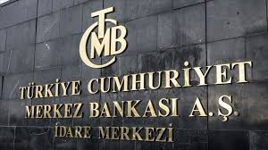

Merkez Bankası Faiz Kararı Açıklandı
Türkiye Cumhuriyet Merkez Bankası, kritik toplantısında 50 baz puan indirim kararı aldı. Kararın ardından piyasalarda dalgalı seyrin sürdüğü görüldü; uzmanlar, enflasyon dinamiklerinin yakından izlenmesi gerektiğini belirtiyor.
